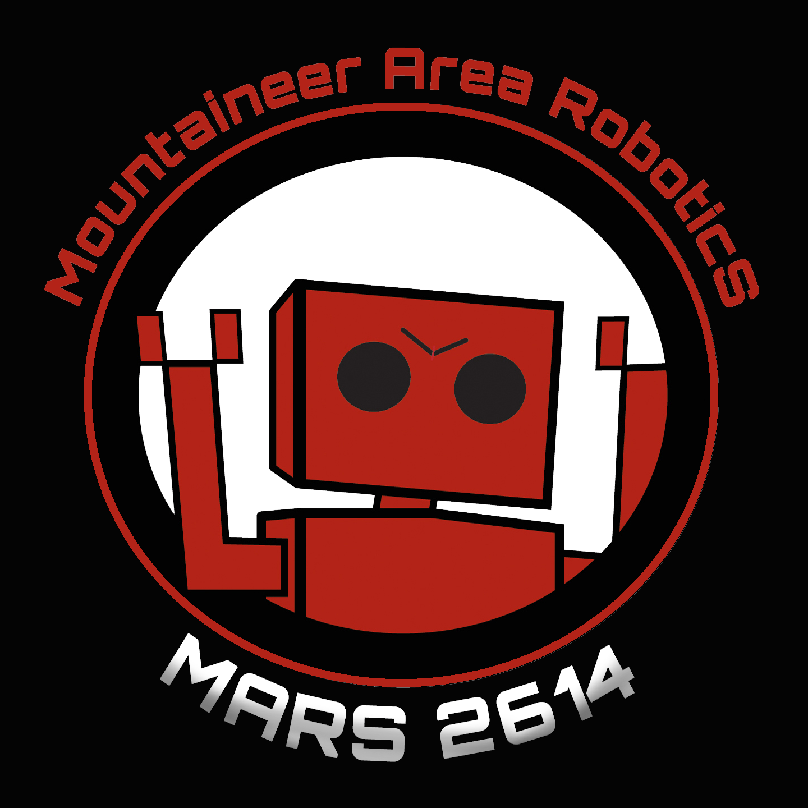

MARSLib
A zero-allocation, physics-simulated FRC framework with deterministic AdvantageKit logging, 250Hz odometry, and shot-on-the-move kinematics.
Framework Features
Every system is designed for deterministic, replay-safe operation under competition stress.
ZERO-ALLOCATION HOT PATH
Pre-allocated odometry buffers, cached module states, and static velocity constants ensure the 20ms control loop runs with zero garbage collection pressure.
LEARN MORE →ROBOT ONBOARDING
Complete step-by-step guidance for installing WPILib, Git, cloning the framework, and setting up AdvantageScope layouts for telemetry mastery.
START LEARNING →PHYSICS SIMULATION & TESTING
Full 2D Dyn4j rigid-body simulation powering 89+ offline CI/CD tests. Develop control loops and autonomous paths without mocking or a physical robot.
LEARN MORE →ADVANTAGEKIT LOGGING
Every input is recorded, every output is reproducible. Replay any match in AdvantageScope with bit-perfect algorithm reproduction through the IO abstraction.
LEARN MORE →THREAD-SAFE FAULT MANAGEMENT
ConcurrentHashMap-backed fault tracking with atomic counters. CAN bus dropouts trigger LED alerts, controller rumble, and automatic dead-reckoning fallback.
LEARN MORE →SHOT-ON-THE-MOVE SOLVER
Quadratic time-of-flight interception with Magnus lift compensation. Accurate shooting while pulling full-speed swerve maneuvers.
LEARN MORE →AGENTIC SKILL ARCHITECTURE
The first robot framework co-developed with AI. Specialized skills enforce elite architectural patterns, ensuring all code maintains zero-allocation metrics.
LEARN MORE →Architecture
Strict AdvantageKit dependency injection isolates logic from hardware.
Package Reference
Core framework packages and their responsibilities.
| Package | Description | Key Classes |
|---|---|---|
com.marslib.swerve |
250Hz odometry, swerve kinematics, traction control, and teleop math | SwerveDrive, SwerveModule, PhoenixOdometryThread |
com.marslib.vision |
AprilTag localization with MegaTag 2.0 fusion and ambiguity rejection | MARSVision, VisionIO, VisionConstants |
com.marslib.mechanisms |
Generic IO abstractions for linear, rotary, and flywheel mechanisms | RotaryMechanismIO, LinearMechanismIO |
com.marslib.faults |
Thread-safe fault reporting, LED alerts, and diagnostic commands | MARSFaultManager, Alert |
com.marslib.simulation |
Dyn4j physics world, game piece spawning, and field obstacle meshes | MARSPhysicsWorld, GamePieceBody |
com.marslib.power |
Voltage load-shedding and stator current monitoring | MARSPowerManager |
com.marslib.util |
State machines, tunable numbers, shot math, and feedforward estimation | MARSStateMachine, EliteShooterMath, LoggedTunableNumber |
com.marslib.auto |
PathPlanner integration, alignment commands, and diagnostic checks | MARSAutoBuilder, MARSDiagnosticCheck |
frc.robot |
Competition logic: RobotContainer, commands, constants, and bindings | RobotContainer, MARSSuperstructure, ShootOnTheMoveCommand |
Test Coverage
JaCoCo-measured coverage across 44 test files and 145 test cases.
📏 Line Coverage
🌿 Branch Coverage
⚙️ Instruction Coverage
🏗️ Class Coverage
Resources & Training
Interactive guides for MARSLib and essential learning materials for our core dependencies.
MARSLIB TUTORIALS
Interactive guides covering Swerve kinematics, zero-allocation structures, power shedding, and collision-safe state machines.
INTERACTIVE LEARNING →ADVANTAGEKIT DOCS
Official AdvantageKit documentation — IO layer patterns, deterministic log replay, and recording inputs/outputs.
CORE FRAMEWORK →ADVANTAGESCOPE
Robot telemetry visualization — 3D field view, mechanism editors, joystick overlays, and log analysis.
TELEMETRY →WPILIB DOCS
The official FRC programming guide — command-based architecture, hardware APIs, and simulation.
FRC FOUNDATION →PATHPLANNER
Path planning GUI and library — create autonomous trajectories and build auto routines with named commands.
AUTONOMOUS →CTRE PHOENIX 6
TalonFX, CANcoder, and Pigeon2 documentation — motion control, signal API, and high-frequency CAN FD.
HARDWARE →REV ROBOTICS
REVLib documentation for SPARK MAX/Flex motor controllers and the REV Control Hub ecosystem.
HARDWARE →LIMELIGHT
Limelight smart camera documentation — AprilTag pipelines, MegaTag localization, and neural network detection.
VISION →PHOTONVISION
Open-source vision processing — AprilTag pose estimation, hardware calibration, and PhotonLib integration.
VISION →MARSLib stands upon the shoulders of giants. We extend our deepest gratitude to the MapleSim project for their groundbreaking simulation patterns, and to the incredible open-source maintainers, corporate sponsors, and the FIRST community for making modern FRC software possible.
 MapleSim
MapleSim